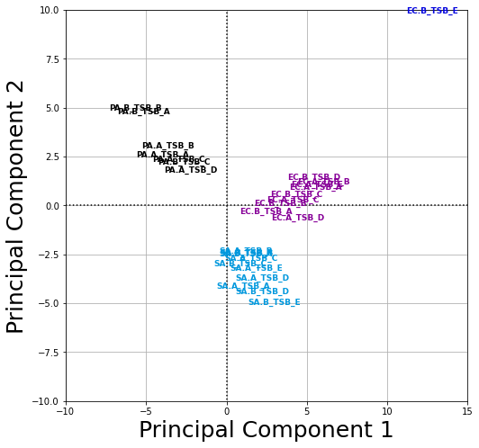
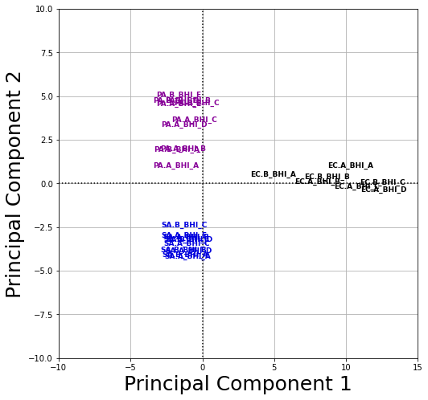
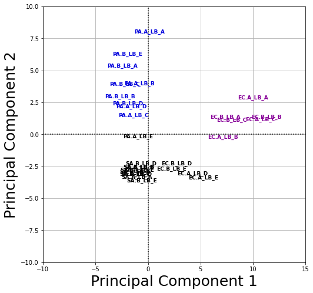
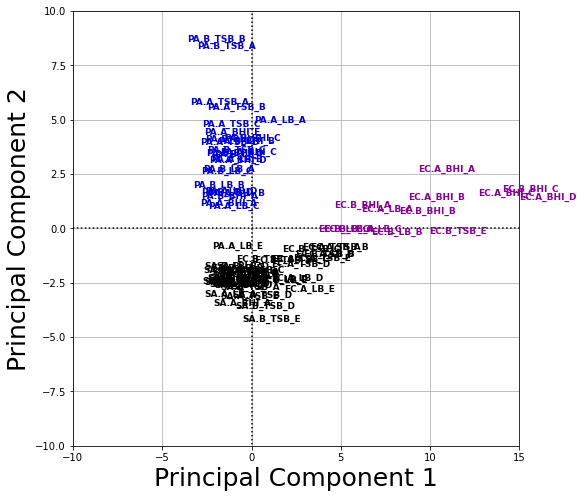

Data Analysis¶
In the following Jupyter Notebook we will be performing data analysis on the VOC chromatographic data. We will be using hierarchical clustering to cluster the PCA data we created previously.
import pandas as pd
import numpy as np
from matplotlib import pyplot as plt
#Read in our datasets
pca_tsb = pd.read_csv('data/cleaned/tsb_components.csv')
pca_bhi = pd.read_csv('data/cleaned/bhi_components.csv')
pca_lb = pd.read_csv('data/cleaned/lb_components.csv')
pca_full = pd.read_csv('data/cleaned/full_components.csv')
---------------------------------------------------------------------------
FileNotFoundError Traceback (most recent call last)
~\AppData\Local\Temp/ipykernel_1604/1180238909.py in <module>
1 #Read in our datasets
----> 2 pca_tsb = pd.read_csv('data/cleaned/tsb_components.csv')
3 pca_bhi = pd.read_csv('data/cleaned/bhi_components.csv')
4 pca_lb = pd.read_csv('data/cleaned/lb_components.csv')
5 pca_full = pd.read_csv('data/cleaned/full_components.csv')
~\AppData\Roaming\Python\Python38\site-packages\pandas\io\parsers.py in parser_f(filepath_or_buffer, sep, delimiter, header, names, index_col, usecols, squeeze, prefix, mangle_dupe_cols, dtype, engine, converters, true_values, false_values, skipinitialspace, skiprows, skipfooter, nrows, na_values, keep_default_na, na_filter, verbose, skip_blank_lines, parse_dates, infer_datetime_format, keep_date_col, date_parser, dayfirst, cache_dates, iterator, chunksize, compression, thousands, decimal, lineterminator, quotechar, quoting, doublequote, escapechar, comment, encoding, dialect, error_bad_lines, warn_bad_lines, delim_whitespace, low_memory, memory_map, float_precision)
674 )
675
--> 676 return _read(filepath_or_buffer, kwds)
677
678 parser_f.__name__ = name
~\AppData\Roaming\Python\Python38\site-packages\pandas\io\parsers.py in _read(filepath_or_buffer, kwds)
446
447 # Create the parser.
--> 448 parser = TextFileReader(fp_or_buf, **kwds)
449
450 if chunksize or iterator:
~\AppData\Roaming\Python\Python38\site-packages\pandas\io\parsers.py in __init__(self, f, engine, **kwds)
878 self.options["has_index_names"] = kwds["has_index_names"]
879
--> 880 self._make_engine(self.engine)
881
882 def close(self):
~\AppData\Roaming\Python\Python38\site-packages\pandas\io\parsers.py in _make_engine(self, engine)
1112 def _make_engine(self, engine="c"):
1113 if engine == "c":
-> 1114 self._engine = CParserWrapper(self.f, **self.options)
1115 else:
1116 if engine == "python":
~\AppData\Roaming\Python\Python38\site-packages\pandas\io\parsers.py in __init__(self, src, **kwds)
1889 kwds["usecols"] = self.usecols
1890
-> 1891 self._reader = parsers.TextReader(src, **kwds)
1892 self.unnamed_cols = self._reader.unnamed_cols
1893
pandas\_libs\parsers.pyx in pandas._libs.parsers.TextReader.__cinit__()
pandas\_libs\parsers.pyx in pandas._libs.parsers.TextReader._setup_parser_source()
FileNotFoundError: [Errno 2] File data/cleaned/tsb_components.csv does not exist: 'data/cleaned/tsb_components.csv'
def plot_clustering(X_red, labels, title=None):
X_red, y = X_red.iloc[:,:2], X_red['Samples ']
plt.figure(figsize=(8, 8))
for i in range(X_red.shape[0]):
plt.text(X_red.iloc[i, 0], X_red.iloc[i, 1], str(y[i]),
color=plt.cm.nipy_spectral(labels[i] / 10.),
fontdict={'weight': 'bold', 'size': 9})
if title is not None:
plt.title(title, size=25)
plt.xlim(-10,15)
plt.ylim(-10,10)
plt.xlabel('Principal Component 1', size=25)
plt.ylabel('Principal Component 2', size=25)
plt.hlines(0,xmin=-20, xmax=20, linestyles='dotted')
plt.vlines(0,ymin=-20, ymax=20, linestyles='dotted')
plt.grid()
plt.savefig('images/tsb_pca_cluster.png')
from sklearn.cluster import AgglomerativeClustering
clustering = AgglomerativeClustering(linkage='ward', n_clusters=4)
clustering.fit(pca_tsb.iloc[:,:2])
plot_clustering(pca_tsb, clustering.labels_)

from sklearn.cluster import AgglomerativeClustering
clustering = AgglomerativeClustering(linkage='ward', n_clusters=3)
clustering.fit(pca_bhi.iloc[:,:2])
plot_clustering(pca_bhi, clustering.labels_)

from sklearn.cluster import AgglomerativeClustering
clustering = AgglomerativeClustering(linkage='ward', n_clusters=3)
clustering.fit(pca_lb.iloc[:,:2])
plot_clustering(pca_lb, clustering.labels_)

from sklearn.cluster import AgglomerativeClustering
clustering = AgglomerativeClustering(linkage='ward', n_clusters=3)
clustering.fit(pca_full.iloc[:,:2])
plot_clustering(pca_full, clustering.labels_)
